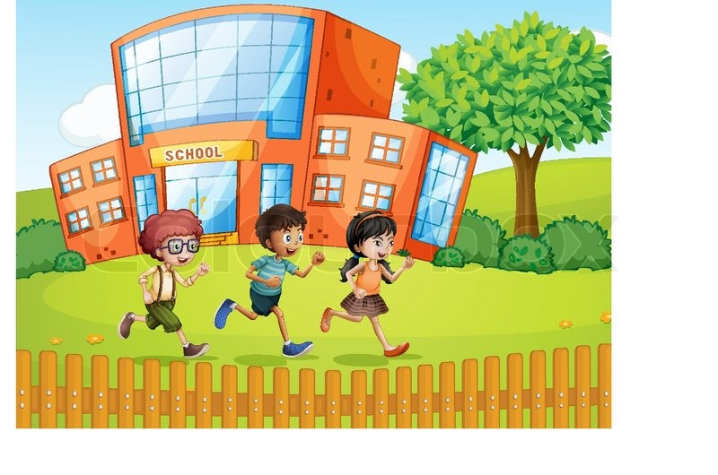

When I first entered school I had many memorable moments, but the best moments that I've experienced are in a particular class in 7th standard. So I was pretty nervous as there were many new people in my class. I remember my first debate in this class. I didn't want to do it, but finally I did it and that one was my best moments. When I went to the stage I felt afraid, and then when I started talking, I felt so good for the effort I applied on. Now I feel so much better than that day because now I know that I can do whatever I want to do. The learnings that I acquire made it so good this moment because I know that I have to trust on me. Something teachers or students can learn from my experience is that we have to overcome our fears and not let them control ourselves because we can't know our capabilities if we are afraid.